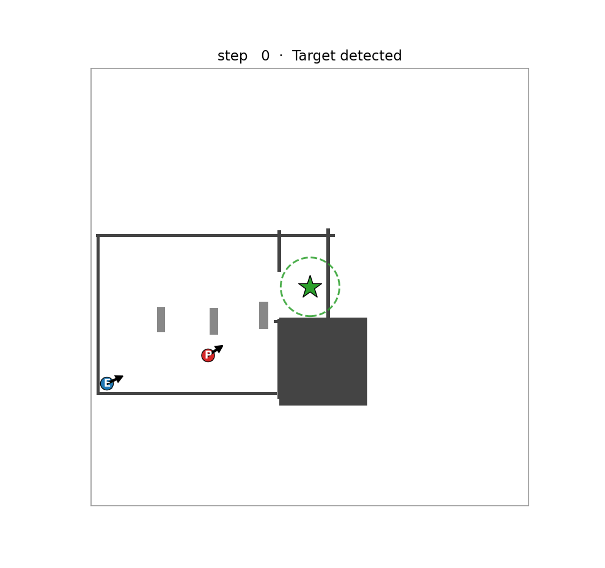

Multi-Robot Cooperative Pursuit — Isaac Sim to Unitree Go2
Two quadrupeds cooperatively trap an intruder in a factory. I owned perception & state estimation (LiDAR-ICP + Kalman fusion, 1.5 cm localisation error) and the MAPPO policy with a Transformer actor; the modular ROS 2 stack was then trialled on a real Unitree Go2.
An integrated multi‑robot pursuit system for factory environments: two Unitree Go2‑style agents must cooperatively trap an intruder inside a 20×20 m warehouse with perimeter walls and shelf islands. It is built as a modular ROS 2 pipeline — Isaac Sim → Core → Perception → MARL → Navigation → Locomotion — where the high‑level decision module is a MAPPO policy with a Transformer actor over a 50‑frame observation history and 8‑ray LiDAR, and navigation turns subgoals into collision‑free paths via A* and a NavDP‑style diffusion planner.
Results
My work — perception & state estimation
- Robot self-localisation: IMU dead reckoning with a complementary filter and zero-velocity updates, corrected every 6th step by trimmed-ICP scan-to-map matching on LiDAR with a multi-hypothesis yaw search — an odometry-based yaw reference removed a ~50° heading drift.
- Intruder detection that fuses on-board depth cameras, monocular CCTV ray triangulation and LiDAR clustering through a constant-velocity Kalman filter, served to the rest of the stack over HTTP.
- Measured on a 252-step run with 8 cameras and 2 LiDARs: 0.015 m robot position error, 0.15° yaw error, 0.11 m intruder error and 87% detection at 24 Hz.
My work — MARL decision layer
- MAPPO (PPO with a centralised critic) with a Transformer actor over a 50-frame observation history and 8-ray LiDAR; a continuous flanking reward (1 − cos θ)/2 plus pinning, intercept, time and proximity terms.
- The Transformer actor cut same-side approaches (both robots arriving from one side) from ~25% to ~7%.
- Diagnosed why v13 stalled: the observation and action carry no yaw, and a 90° turn takes ~26 frames against a 20-frame hold window. That justified a geometric fallback heading controller — RL alone reached ~25% capture, the fallback 88% vs a stationary target.
System & sim-to-real
- Modular ROS 2 architecture — Isaac Sim → Core → Perception → MARL → Navigation (A* on a 40×40 grid + NavDP diffusion planner) → Locomotion — with each module running in its own environment and independently testable.
- A self-contained sim-to-real line for the Unitree Go2 streams sport-mode state, IMU, LiDAR point cloud and the front camera into a live dashboard; in the lab a real Go2 completed a patrol → detect → turn → approach sequence.
Skills & Technologies
- Isaac Sim / Isaac Lab
- PyTorch
- MAPPO / Multi‑Agent RL
- Transformer Policy
- ROS 2
- A* & NavDP Path Planning
- Kalman Filter / ICP
- Sim‑to‑Real (Unitree SDK)
Gallery
